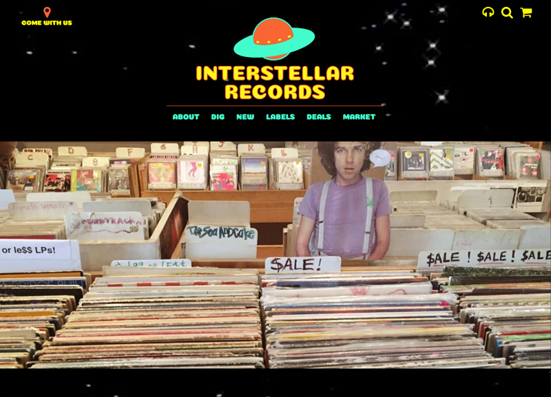

ZACH BUCEK STUDIO
// design & development
contact: zbucek@gmail.com
portfolio
-
- I am a web designer and developer. My skills run the gamut from layout and logo design through UI/UX and front-end development. I also do WordPress development, creating custom themes for clients who want something more than what comes out of the box.
- With all of my projects, I seek to harness the complexity of information systems to create a lasting connection with the end user. This also means working closely with clients to develop a durable identity and design system.
- Below is a picture of my cat Friar Tuck. He is always hungry.
WEBSITES
>> client work:
-
visit the site
This dynamic and responsive portfolio site is built on a custom WordPress theme implementing CSS Grid.
Minneapolis, MN 2018
-
visit the site
- This complete build utilizes a custom WordPress theme. Illustrations, logos, and how-to diagrams were developed as part of a complete identity for MCTC's Library Zine Collection, featuring over 6,000 titles. It is now the exclusive online portal for the collection, allowing users to search the entire database in addition to images and additional content related to featured zines.
- The website meets accessibility standards, is fully responsive, and is now dynamically maintained by library staff.Minneapolis, MN 2018
-
visit the site
- This complete build utilizes a custom WordPress theme designed and developed with a complete identity for the gallery, including content-specific logos. This website is fully responsive and allows the gallery owners to dynamically upload content featuring their exhibitions and gallery guides.
Minneapolis, MN 2017
>> prototypes:
-
visit the site
This is a simple image library application that uses JS arrays and for loops with jQuery to display olympic pictograms specific to year or sport. It is fully responsive and features an original logo.
Minneapolis, MN 2017
-
 visit the site
This is the online presence of an imagined record store, one that pays homage to my favorite independent shops and the wonderful, curated sounds they make available. It is fully responsive and is built on a customized Bootstrap 4 framework. It also features original branding.
Minneapolis, MN 2017